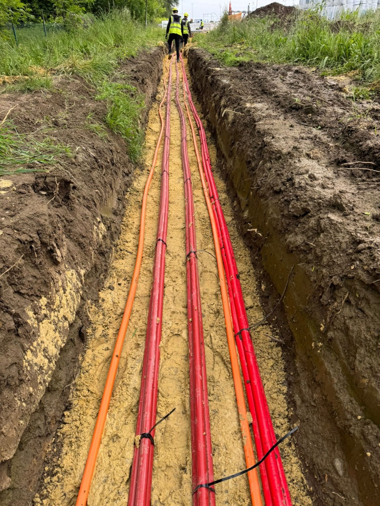
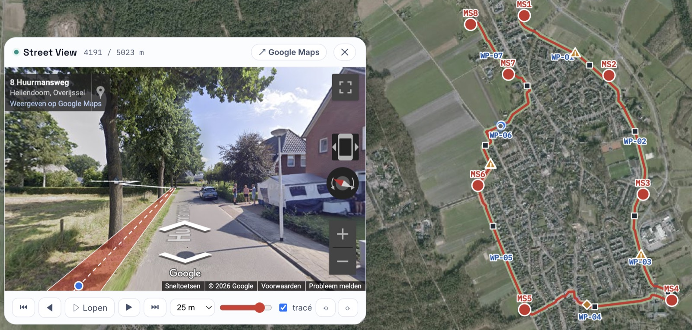
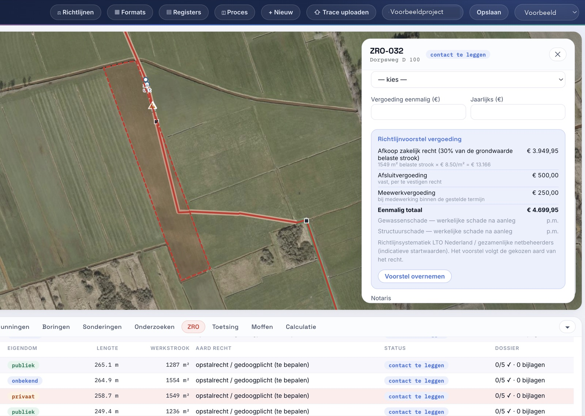

Energietransitie
Elektriciteitskabels, netverzwaring, laadinfrastructuur en aansluitingen voor duurzame opwek.
Van projectstart tot definitief ontwerp
Wij zijn het ingenieursbureau dat je begeleidt van de eerste projectschets tot een definitief ontwerp dat klaar is voor overdracht aan de aannemer. Met unieke AI-tools ontwerpen we kabels en leidingen voor energie, gas, warmte, water en telecom sneller én beter — zonder in te leveren op vakmanschap.
VECTOR Engineering is opgericht vanuit een duidelijke overtuiging: de energie-, warmte- en watertransitie vragen om ingenieurs die vooroplopen. Wij combineren onze jarenlange ervaring in de ondergrondse infrastructuur met scherpe IT-kennis en een uitgesproken drive om te vernieuwen. Netbeheerders, waterbedrijven, aannemers en ingenieursbureaus vinden in ons een partner die met unieke AI-tools sneller en beter ontwerpt — van de eerste projectschets tot het definitief ontwerp.

Kabels en leidingen: al jaren ons vakgebiedVakgebieden
Onder het maaiveld komen energie, gas, warmte, water en telecom samen: elektriciteitskabels, gas-, warmte- en waterleidingen, riolering en telecomnetten delen dezelfde sleuven, kruisingen en ductbanken. Wij engineeren die samenhang: van tracékeuze en diepteligging tot raakvlakken met bestaande infra en fasering richting uitvoering.

Elektriciteitskabels, netverzwaring, laadinfrastructuur en aansluitingen voor duurzame opwek.
Gasleidingen, verleggingen en engineering richting aardgasvrije wijken en warmtenetten.
Drinkwaterleidingen, transportleidingen, riolering en klimaatadaptieve waterinfra.
Glasvezeltracés, smart-grid bekabeling en coördinatie met nutsvoorzieningen.
Diensten
Technische uitwerking van kabel- en leidingtracés, van tracestudie en profielkeuze tot definitief ontwerp en overdraagbare documentatie.
Met onze unieke AI-tools ontwerpen we kabelplannen, leidingprofielen en projectinformatie sneller én beter — van eerste concept tot definitief ontwerp.
Structuur in projectinformatie voor projecten in de ondergrondse infrastructuur, zodat tracékeuzes, diepteliggingen, raakvlakken en revisies traceerbaar en controleerbaar blijven.

Grondzaken en omgeving
Een tracé raakt altijd percelen, eigenaren en natuur. Onze tools koppelen het ontwerp automatisch aan kadaster- en omgevingsdata, zodat de juridische en milieukundige gevolgen vanaf het begin zichtbaar zijn en niet pas laat in het project.
Werkwijze
Scope, uitgangspunten en randvoorwaarden worden helder gemaakt. Elk project start anders; we sluiten aan op de fase waarin jouw project zich bevindt.
Tracékeuzes en hoofdopzet van kabels en leidingen worden verkend, inclusief de eerste raakvlakken met bestaande infra.
Profielen, dieptes en kruisingen liggen vast. Onze AI-tools toetsen raakvlakken en eisen, zodat het ontwerp vergunningsgereed is.
Ons werk eindigt bij het DO. Ontwerp en documentatie gaan over naar de aannemer, die het uitvoeringsontwerp en de realisatie verzorgt.
Tijdwinst
Onderzoeken en vergunningen lopen gelijktijdig met het ontwerp en staan niet langer op het kritieke pad.
AI versnelt de analyse, kaarten en variantenafweging aanzienlijk. Onze mensen valideren en kiezen.
AI ondersteunt bij tekenwerk, berekeningen en kostenraming. De engineeringbeoordeling blijft mensenwerk.
Een compact kernteam met specialisten op afroep beperkt de verliestijd tussen fases.
Onze unieke AI-tools
Wij zetten unieke, zelfontwikkelde AI-tools in als extra kwaliteitslaag op kabelplannen, leidingprofielen, tracéoverzichten en raakvlakanalyses. Doordat we voorop lopen met AI, vinden we conflicten tussen kabels en leidingen van verschillende netten sneller en werken we consistenter — zonder in te leveren op de kwaliteit die netbeheerders, waterbedrijven, aannemers en ingenieursbureaus van ons gewend zijn. De engineer blijft aan het roer: AI versnelt, onze mensen beslissen.
Samenwerken
Contact
Stuur een bericht. We reageren snel en denken concreet mee over engineering van ondergrondse infrastructuur — van tracestudie tot definitief ontwerp, versneld met onze unieke AI-tools.